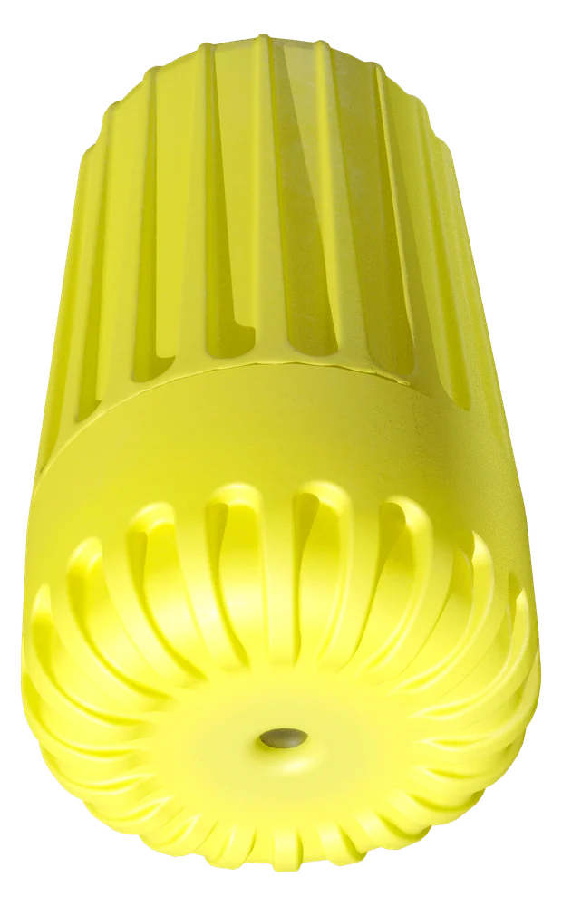

Applications
Ten places with a rule that asks for a record.
The sensors and the gateway do not change between them. The alarm thresholds, the groups and the report do. Timber and concrete have their own pages; here are the others.

- Pharma and food storage
- EU GDP and HACCP require continuous, alarmed temperature records (EN 12830). One cooling failure over a weekend destroys more stock than a whole monitoring system costs. SNTH sensors on the shelves and in the cold room report every ten minutes; the alarm reaches the person on duty by SMS even when the site network is down, and the record exports for the auditor.
- Server rooms and telecom shelters
- When the cooling fails the site network often fails with it, so an alarm that depends on the LAN never arrives. A documented peak of 30.2 °C against a 20 °C limit is a real case from our installations. The gateway's 4G back-haul and 10-day battery keep the alarm independent of the room it protects (ASHRAE TC 9.9, uptime agreements).
- Museums, archives and churches
- Showcases, depots and historic interiors need stable humidity within narrow bands (EN 15757, Bizot guideline). The Ø24 mm sensor disappears into a showcase or behind a panel and runs for ten years without a battery change, so the climate record of a loan or a season is complete.
- Agriculture and storage
- Hay self-heating shows as a temperature rise days before ignition; grain hot spots and ripening rooms need stable humidity, usually far from mains and internet. The solar gateway and sensors pushed into the stack or bin report from the field with nothing to plug in.
- Industrial infrared
- Annual thermography (VdS 2858, DGUV V3) misses the hot joint that develops between inspections. SNIT infrared sensors on busbars, bearings and pipes trend the surface temperature continuously and alarm on an absolute limit, a rise above the 30-day baseline or a difference between phases.
- Drying and restoration
- After water damage the drying has to be documented for the insurer and the readiness of screed and timber proven before finishing (DIN 18560). Sensors in the drilled holes report the moisture from inside the element until it is dry, and the export is the document.
- Care homes and housing
- Heat-protection plans ask for room temperature records in summer; mould disputes ask for humidity evidence in winter. A sensor per room, a gateway per building and alarms to the facility manager cover both.
- Tunnels, dams and bridges
- Curing of mass concrete, leak detection in galleries and the moisture state of decks and abutments, in the context of DIN 1076 inspections. Cast-in or drilled-in sensors with a solar gateway on the structure give a permanent record without cabling.
- Timber structures
- Wood moisture inside the member, converted per species, against Eurocode 5 service classes and the 20 % decay threshold of DIN 68800-2. See the timber page and the tower reference.
- Concrete curing
- Maturity and strength to ASTM C1074 and EN 13670, drying for flooring, automatic detection of the stabilisation and desaturation points. See the concrete page and the 2026 field results.
Who we work with
- Timber producers and timber-construction firms
- Contractors, precast plants and infrastructure owners
- Pharma, food and cold-chain storage; IT and telecom sites
- Museums, agriculture, industrial maintenance and research institutes
What a project looks like
You send a sketch or floor plan; we return a coverage plan with sensor positions, the gateway location and the expected signal strength per position. Installation runs at about 50 points per day. Sensors are registered by ID and named by position, groups and thresholds are set, recipients added, and the first packets arrive within ten minutes. After the first weeks you receive a pilot report for your object as the basis for the roll-out decision.
Start with your own data in ten days.
The Demo Set (one gateway, three sensors, three months of software) is delivered within ten working days and commissioned remotely. Send a sketch or floor plan and the coverage plan comes back within three working days.
- Phone
- +359 888 920 108
- info@sitech.consulting
- Office
- 66B Manastirski Livadi Street, 1404 Sofia, Bulgaria